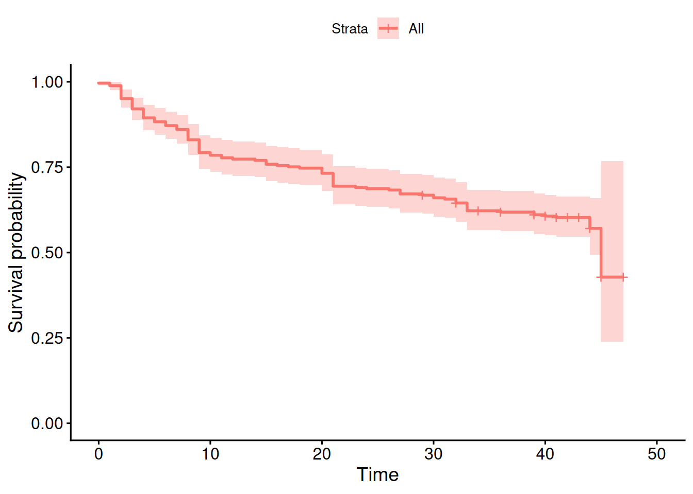

Use the dataset hschool. The variables are: caseid (observation identifier), time (time in months until school drop-out, or censoring), died1 (event indicator: 1 = dropped out, 0 = censored), sex (0 = male, 1 = female), grades (1 = high grades, 5 = low grades), parttime (1 = part-time student), mrg (month of marriage, coded as \(12 \times (\text{year} - 1980) + \text{month}\); 99 = never married), and stm (month of college entry, coded the same way).
How many students were married before entering college (i.e., mrg occurred before stm)?
How many students got married during college (i.e., mrg fell between stm and stm + time)?
We are interested in the effect of sex and grades on the time until school drop-out. Fit a linear regression of time on sex and grades, making sure you correctly restrict the sample to only those subjects for whom drop-out actually occurred. Interpret all coefficients, including the intercept. (Note the coding of grades)
Plot the non-parametric Kaplan-Meier survival curves for the event of dropping out. What proportion of students, approximately, dropped out by 20 months?
Fit a Cox proportional hazards model of drop-out on sex and grades. Interpret each coefficient (a) as an effect on the log hazard, and (b) as a hazard ratio.
Plot the hazard function implied by the Cox model,stratified by sex and considering the overall average value of grades.
Test the proportional hazards assumption for the Cox model of question 4. Does the assumption hold?
BONUS: Construct a person-period file from hschool: one row per subject per month at risk, with an event indicator equal to 1 only in the month drop-out actually occurred (0 in all other months, including for censored subjects). Fit a discrete-time event history model using logistic regression of the event indicator on sex and grades. Enter duration effects as a single linear term. What do you conclude, and how does this compare to the conclusions from the Cox model?
Answers
NoteSee answers
library(biostat3) # loaded first to avoid conflict with dplyr::select.
Loading required package: survival
Loading required package: MASS
Attaching package: 'biostat3'
The following object is masked from 'package:survival':
colon
── Conflicts ────────────────────────────────────────── tidyverse_conflicts() ──
✖ dplyr::filter() masks stats::filter()
✖ dplyr::lag() masks stats::lag()
✖ dplyr::select() masks MASS::select()
✖ lubridate::year() masks biostat3::year()
ℹ Use the conflicted package (<http://conflicted.r-lib.org/>) to force all conflicts to become errors
library(haven)library(survival)library(survminer)
Loading required package: ggpubr
Attaching package: 'survminer'
The following object is masked from 'package:survival':
myeloma
fit_lm <-lm(time ~ sex + grades, data = hschool |>filter(died ==1))modelsummary(fit_lm, stars =TRUE)
(1)
+ p < 0.1, * p < 0.05, ** p < 0.01, *** p < 0.001
(Intercept)
18.553***
(3.136)
sex
-0.075
(2.392)
grades
-1.475
(0.965)
Num.Obs.
107
R2
0.022
R2 Adj.
0.003
AIC
841.0
BIC
851.7
Log.Lik.
-416.498
F
1.173
RMSE
11.86
Women drop out about 0.075 months faster than men, but this is not significant.
People with lower grades (higher values of grades, since 1 = high, 5 = low) drop out faster, but this is not significant either.
Men (sex = 0) with the highest grades (grades = 0, which is outside the actual scale of 1-5 and should ideally be recentered) are predicted to drop out at 18.55 months. Because grades = 0 does not occur in the data, this intercept is not substantively meaningful as it stands.
4
surv <-survfit(Surv(time, died) ~1, data = hschool)ggsurvplot(surv)

About 25% of students dropped out by 20 months.
5
fit_cox <-coxph(Surv(time, died) ~ sex + grades, data = hschool)fit_cox
Call:
coxph(formula = Surv(time, died) ~ sex + grades, data = hschool)
coef exp(coef) se(coef) z p
sex 0.21833 1.24400 0.19851 1.100 0.271
grades 0.33965 1.40446 0.08536 3.979 0.0000692
Likelihood ratio test=16.06 on 2 df, p=0.0003256
n= 265, number of events= 107
Log hazard interpretation: Women have a 0.218 higher log hazard of dropping out than males (a shorter time to drop-out), but this is not significant. People with lower grades have a significantly higher log hazard of dropping out (a shorter time to drop-out).
Hazard ratio interpretation: Women have a 24% higher hazard of dropping out than males, but this is not significant. The hazard of dropping out increases by 40.4% (significant) for each unit increase on the grades scale (i.e., each step toward lower grades).
chisq df p
sex 0.0862 1 0.77
grades 0.7561 1 0.38
GLOBAL 0.8253 2 0.66
The test does not reject the proportional hazards assumption at conventional significance levels: the proportional hazards assumption appears to hold for this model.
8
person_period <- hschool |>select(caseid, time, sex, grades, died) |>uncount(weights = time +1) |># must add 1 because time starts at 0mutate(period =row_number()-1,event =if_else(died==1& period==max(period), 1, 0), .by = caseid)fit_discrete <-glm(event ~ sex + grades + period, data = person_period, family = binomial)modelsummary(list("Cox"= fit_cox, "Logit"= fit_discrete), stars =TRUE)
Cox
Logit
+ p < 0.1, * p < 0.05, ** p < 0.01, *** p < 0.001
sex
0.218
0.230
(0.199)
(0.200)
grades
0.340***
0.333***
(0.085)
(0.086)
(Intercept)
-4.792***
(0.305)
period
-0.026**
(0.008)
Num.Obs.
265
8351
AIC
1119.7
1125.8
BIC
1126.8
1153.9
Log.Lik.
-558.877
F
9.153
RMSE
0.63
0.11
Conclusions are pretty much the same as for the Cox model.